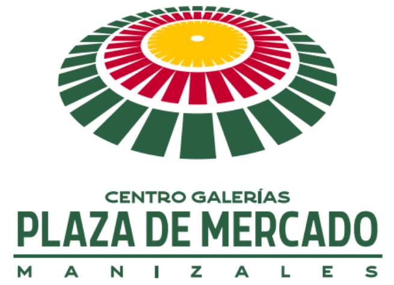

<mat-toolbar color="accent" id="not-found-header" class="mat-elevation-z6">
    
</mat-toolbar>

<div class="not-found-container">
    <div class="not-found">
        <h3>HA OCURRIDO UN ERROR</h3>
        <h1>404</h1>
        <h2>NO SE HA ENCONTRADO LA PÁGINA SOLICITADA</h2>

        <button mat-raised-button (click)="goBack()" id="btn-go-back">Regresar</button>
    </div>
</div>

<mat-toolbar color="accent" id="not-found-footer"></mat-toolbar>